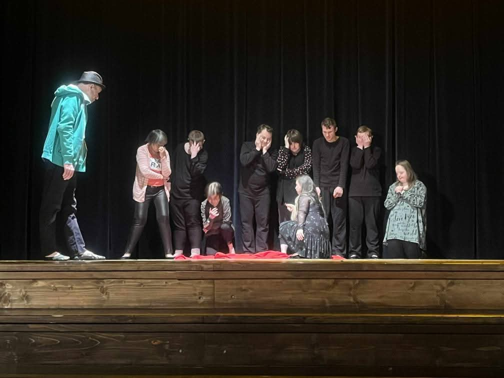
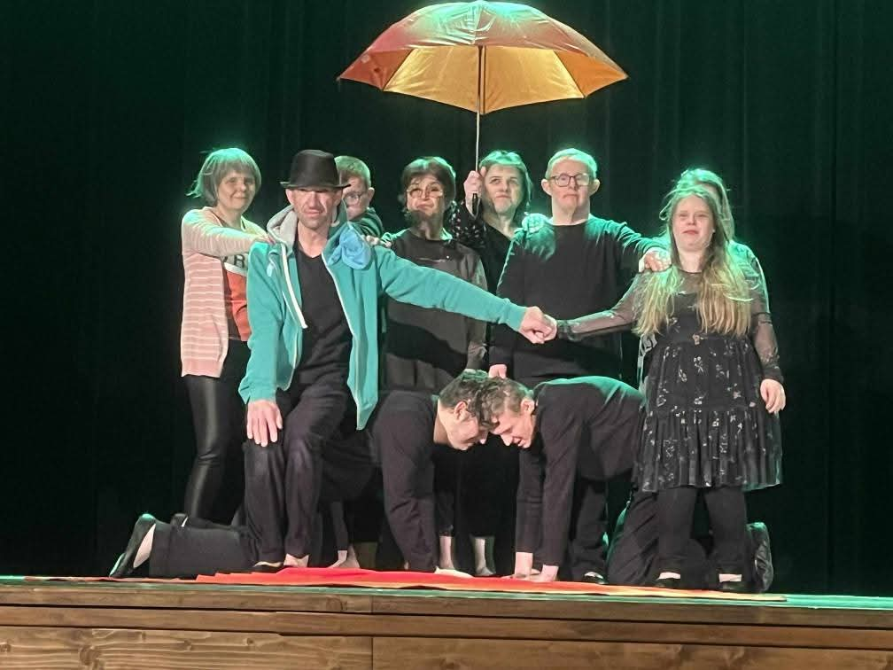
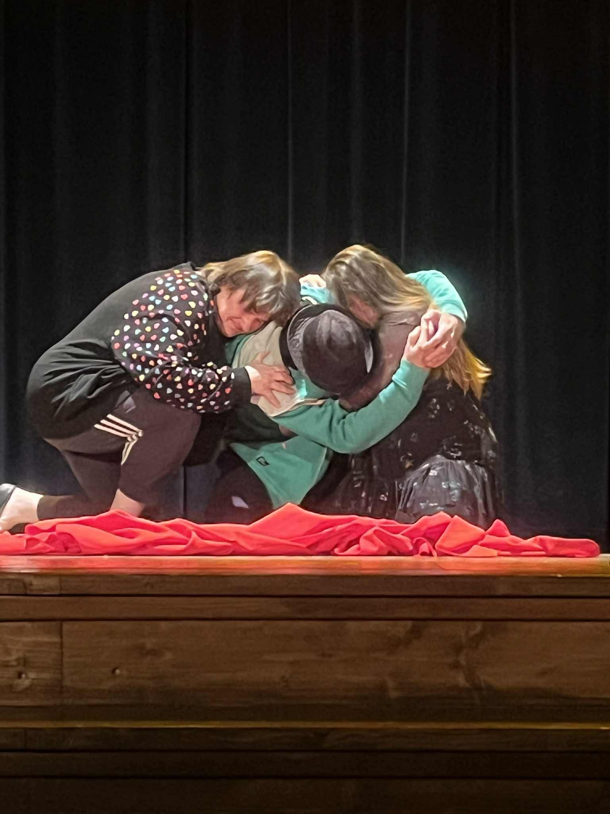
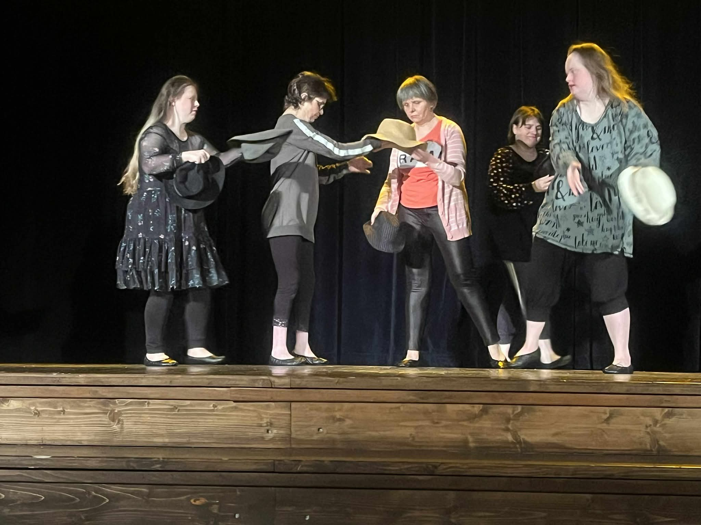

Poor Theatre of Emotions
Poor Relations Theatre has been active since 1994, operating in a Community Self-Help Home (Środowiskowy Dom Samopomocy) in Sopot. It is one of the oldest theatres in Poland dedicated to persons with intellectual disabilities, breaking stereotypes through creative expression and artistic excellence.
- Movement theatre
- 30 minutes
- Captions: EN / PL
Synopsis
He and She - A Fairytale Without a Moral is a simple story about attempting to overcome external limitations and establishing closer relationships with another person. The performance explores themes of connection, vulnerability, and mutual understanding through theatrical forms accessible to all.
The work represents the culmination of decades of artistic development. Theatre serves as a tool for discovering individual potential, overcoming limitations, and achieving satisfaction and joy. The ensemble's multi-generational composition – with actors ranging from 4 to 31 years of continuous participation – enables intergenerational work and mutual creative inspiration.
"Theatre is poor in form but rich in content. Relations—everything that happens between people—is what we want to tell."
Video (YouTube)
Gallery




About the ensemble
Poor Theatre of Emotions has been operating continuously since 1994 from the Community Self-Help Home Type B (Środowiskowy Dom Samopomocy typu B) in Sopot, operated by the Polish Committee for Social Assistance (PZW PKPS). It is one of the oldest and most respected inclusive theatres in Poland, dedicated to persons with intellectual disabilities.
The theatre was founded by Jacek Spica and is directed by Jacek Spica and Paulina Lewandowska. As founders they have developed a distinctive artistic language combining simple theatrical means with profound human expression. The ensemble's work demonstrates that professional stages are also spaces for artists with disabilities.
The theatre's name reflects its philosophy: "poor" in form, using simple expressive means; "relations" emphasizing the human connections at its core. For 30 years, the ensemble has worked to develop their acting craft, participating successfully in numerous national and international theatre festivals and reviews, proving that disability is not an obstacle but rather an impulse for creative action and artistic realization.
Since 2024, TUR has been artist residents at Teatr Atelier in Sopot. The ensemble is also the organizer of the MASSKA International Theatre Review, bringing together approximately 35 theatrical groups from Poland and around the world, including ensembles of people with intellectual disabilities, youth theatre groups, puppet theatres, and professional theatres. Rehearsals are open to the public on Mondays and Fridays.
Festival ensembles
Expand ensemble list
Festival partners